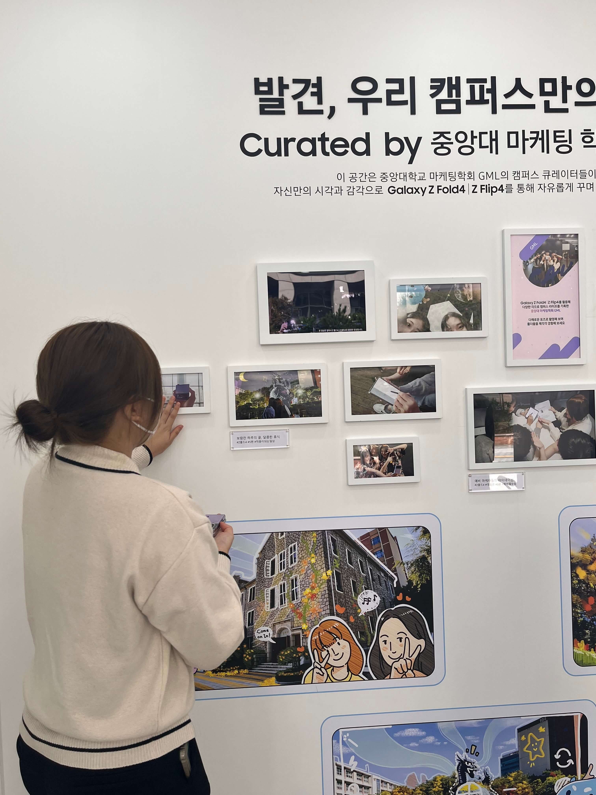
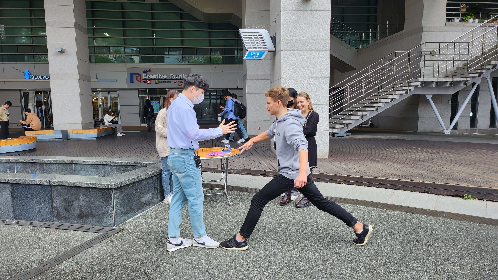
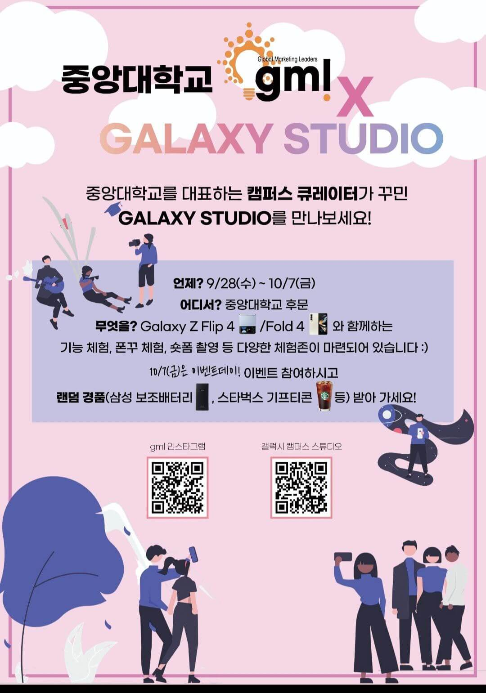
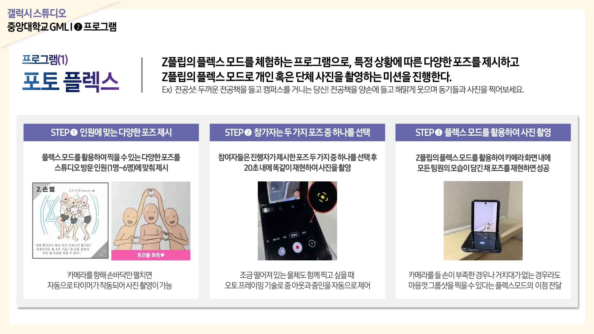
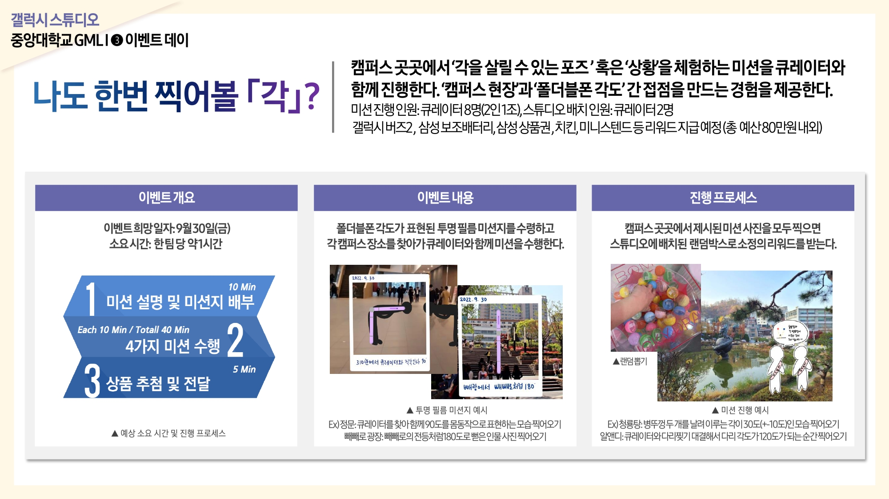

갤럭시 스튜디오 캠퍼스 큐레이터
1,200명의 방문객을 불러온 폴더블폰 팝업스토어











업무 요약
중앙대학교 갤럭시 Z Fold/Z Flip 스튜디오를 기획 및 운영. 팀장으로서 팀(10인)을 이끌며 기획&제작&운영 총괄, 실무자와의 대외 소통 담당
업무 내용 · 전략
[전략]
캠퍼스 일상 속에서 폴더블폰이 전달하고자 하는 핵심 메시지인 '각'을 자연스럽게 반복적으로 접하도록 유도
[스튜디오 사진/영상 전시]
'각양각색 캠퍼스 공간'이라는 테마를 바탕으로 캠퍼스 속 일상을 다양한 각도로 담아냄
중앙대학교 캠퍼스와 폴더블폰 간의 자연스러운 접점을 제시하고자 함
[스튜디오 체험 프로그램]
폴더블폰의 플렉스모드, 멀티태스킹 기능 등 다양한 기능을 친구와 함께 재밌게 체험해볼 수 있도록 구성
[이벤트데이 프로그램]
캠퍼스 곳곳에 미션을 마련하여 스탬프 투어 진행
투명필름지를 활용한 촬영 미션으로, 폴더블폰의 다양한 '각'을 표현할 수 있는 자세를 취하는 것이 핵심
성과 · 결과
2주간 1,000~1,200명의 방문객
이벤트데이 당일 경품 200개 조기소진
실무자: "지금까지 해온 학교들 중 가장 완벽하고 체계적이다."